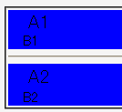
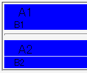

line-heightの値、文字サイズの値、ウィンドウ幅の組み合わせによって、マージンを0にしても隙間が開いてしまうことがある。
<div style="line-height:1.1;"> <p style="margin:0; font-size:1.4em; background:blue;">A1</p> <p style="margin:0; background:blue;">B1</p> </div> <hr> <div style="line-height:1.2;"> <p style="margin:0; font-size:1.4em; background:blue;">A2</p> <p style="margin:0; background:blue;">B2</p> </div>
A1
B1
A2
B2
div要素のline-heightを変えている以外、同じスタイル指定を行っています。
WinIE6.0での表示（標準モード）
N7.0での表示（標準モード）
ウィンドウサイズによっては隙間が開いたり開かなかったりするようです。
属性セレクタの有無との関連は不明です。なお、ここでは属性セレクタは使用していません。
Moz1.0.1およびN7.0では、標準・互換モードともに不具合の発生が確認されました。